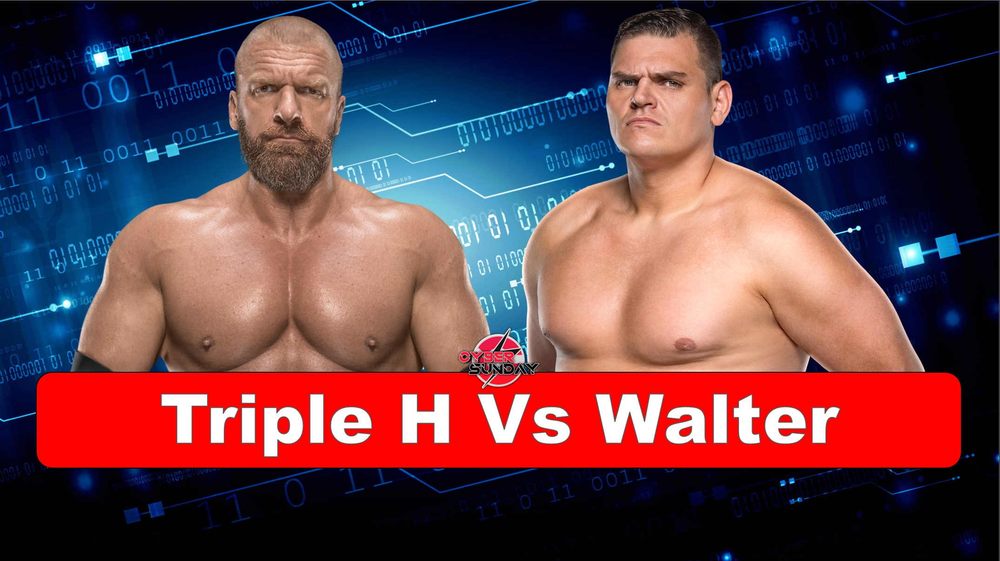
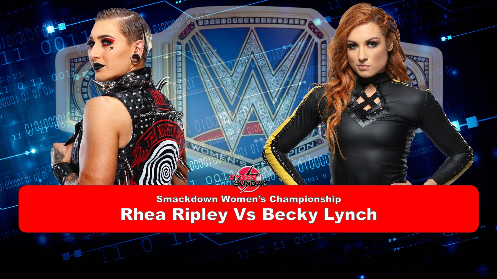
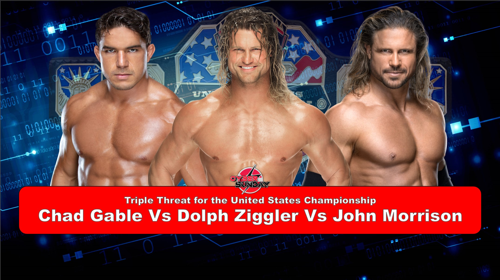
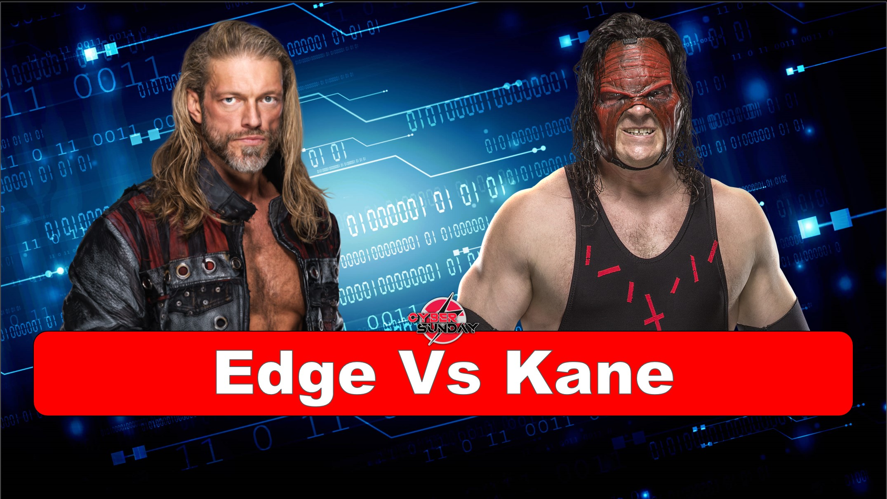
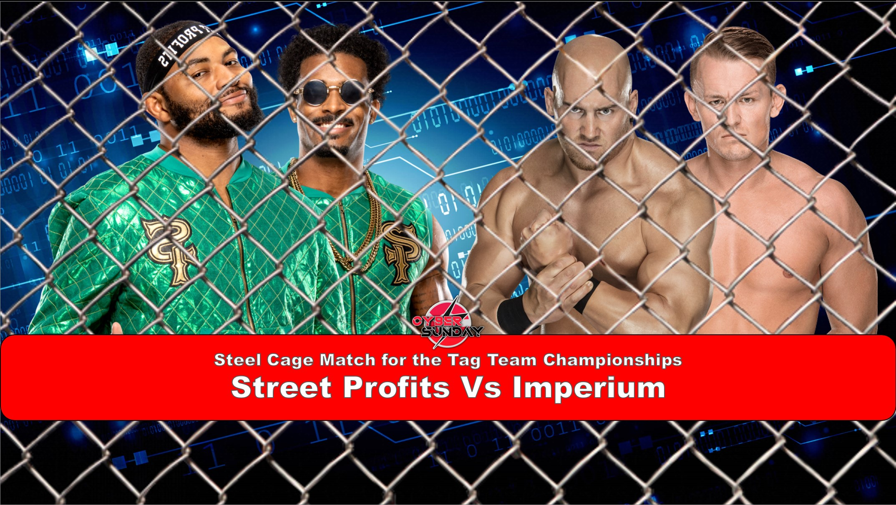
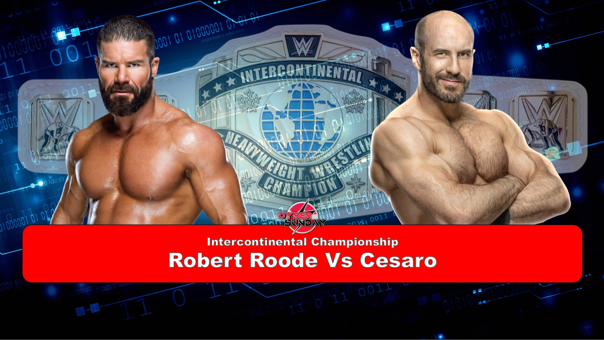
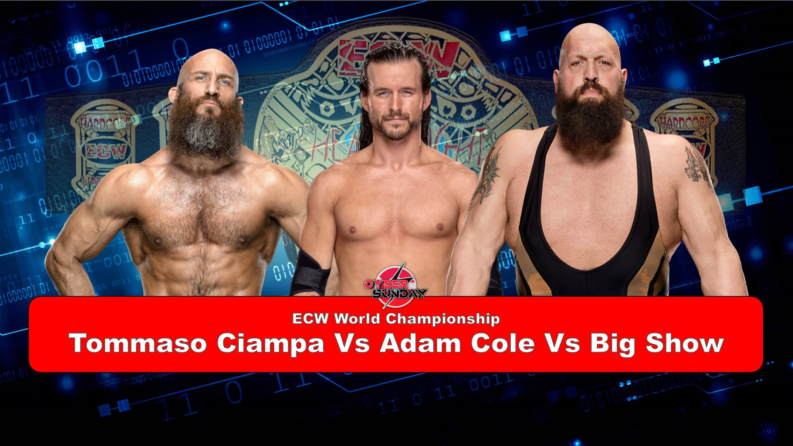
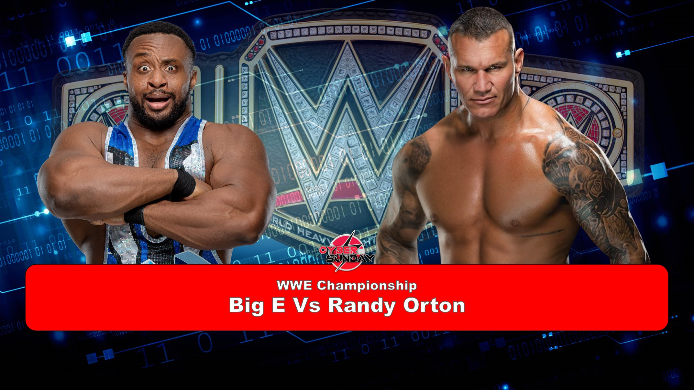
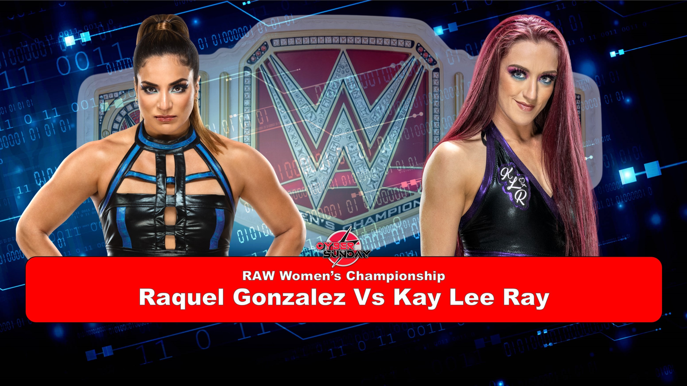
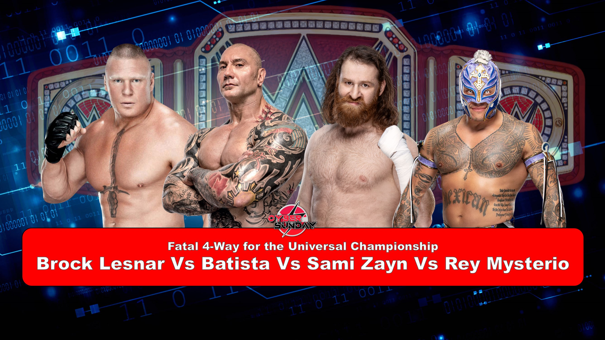

After Winning a Fatal Four way at Summerslam to become the new ECW TV Champion, RVD now has his next challenge in the form of the charismatic enigma Jeff Hardy. But the stipulation for their match is unknown and can only be decided by you
Find out the stipulation and if RVD can retain the TV Championship at Cyber Sunday on Sunday 14th September at 8 ET/5 PT/1 GMT, streaming live exclusively on Peacock in the United States and WWE Network everywhere else!
Triple H Vs Walter

Triple H Vs Walter
After failing to regain his WWE Championship from Big E, Walter turned to his mentor to take out his frustration and distracted Triple H at summerslam which made triple H lose to Shane Mcmahon after shane capitalised on the distraction with a role-up. Not only that but Walter decided to attack Triple H in his own office and brutalise him putting him on the shelf for weeks. But the game wasn’t going to take that lying down and attack Walter costing him his last opportunity at the WWE championship and Called him out for a match at Cyber Sunday. And to make it even bigger, This match will have a stipulation that will be decided by you the WWE Universe.
Find out what happens between Triple H and Walter at Cyber Sunday on Sunday 14th September at 8 ET/5 PT/1 GMT, streaming live exclusively on Peacock in the United States and WWE Network everywhere else!
Rhea Ripley Vs Becky Lynch

Rhea Ripley Vs Becky Lynch
Rhea Ripley go Head to Head at cyber Sunday after Becky Lynch managed to outlast 9 other women and win a Number 1 contender Battle royal. To make it personal, Rhea decided to attach Becky after the match and assault her causing her to have busted open Eye. Becky then challenged Rhea to a Stipulation Match at Cyber Sunday where the WWE Universe would have the opportunity to choose between the 3 options Becky decided on. Those Being: Steel Cage Match, 2 out of 3 Falls or a Last Women Standing.
Find out what will happen when these two women fight in the mystery stipulation at Cyber Sunday on Sunday 14th September at 8 ET/5 PT/1 GMT, streaming live exclusively on Peacock in the United States and WWE Network everywhere else!
Chad Gable Vs Dolph Ziggler Vs John Morrison

Chad Gable Vs Dolph Ziggler Vs John Morrison
The Prestigious United States championship will be defended at Cyber Sunday in a match where the champion is at a disadvantage. Dolph Ziggler will have to defend his United States Championship in a Triple threat match which means that he doesn’t even have to be pinned to lose the title. And it gets worse as his two opponents are two of the most athletic superstars in WWE History.
Find out if Dolph Ziggler can retain his United States Championship at Cyber Sunday on Sunday 14th September at 8 ET/5 PT/1 GMT, streaming live exclusively on Peacock in the United States and WWE Network everywhere else!
Edge Vs Kane

Edge Vs Kane
At Summerslam both men were furious that they weren’t on the Card and didn’t have a match. This led to Smackdown GM deciding to give both men the opptunity to face each other where the winner would get a shot at the United States Championship. However the Match unfortunately ended in count out causing edge to become enraged and attack Kane brutally with a steel cage and a table. These assaults continued happening week after week until Kane got his revenge costing Edge a shot at the WWE Championship. The Smackdown GM then Had enough and decided that they would compete at Cyber Sunday in an Extreme Rules Match.
Find out if Kane will get his revenge at Cyber Sunday on Sunday 14th September at 8 ET/5 PT/1 GMT, streaming live exclusively on Peacock in the United States and WWE Network everywhere else!
Street Profits Vs Imperium (Steel Cage Match)

Street Profits Vs Imperium (Steel Cage Match)
After a classic match against the New day on Smackdown, Imperium had earned themselves a Tag team championship match on the next smackdown, however it wouldn’t work out as expected as the match ended in a brawl between the two team and it ended in count out. Imperium demanded another match for the tag team championship at Cyber Sunday but didn’t want it the same way so they made the match a Steel Cage Match. The street profits accepted the match but made sure that the only way they would retain there title would be by pinfall or submission and wouldn’t be winning by escaping the cage as they wanted to show all teams that they never take the easy way out and they wanted to prove themselves as Champions.
Find out if the Street profits will retain there titles or will imperium finally capture the one pair of tag team title that have alluded them there whole careers at Cyber Sunday on Sunday 14th September at 8 ET/5 PT/1 GMT, streaming live exclusively on Peacock in the United States and WWE Network everywhere else!
Robert Roode Vs Cesaro

Robert Roode Vs Cesaro
Robert Roode Faces his biggest challenge yet in his intercontinental Championship reign as he now has to face the swiss superman, Cesaro in a match where you decide the stipulation.
After
Tommoso Ciampa Vs Adam Cole Vs Big Show

Tommoso Ciampa Vs Adam Cole Vs Big Show
After facing and defeating Cactus Jack in a Vicious Hardcore Match for the ECW world Championship, Tommoso Ciampa has now got his next momumental task as he faces a returning Big Show and Adam cole in a triple threat match for the ECW World Heavyweight Championship where Tommoso Ciampa doesnt even need to get pinned to lose the title
Find out if Tommoso Ciampa will still be ECW World Champion on Sunday 14th September at Cyber Sunday at 8 ET/5 PT/1 GMT, streaming live exclusively on Peacock in the United States and WWE Network everywhere else!
Big E Vs Randy Orton

Big E Vs Randy Orton
After Defeating Bobby Lashley in a Best of 3 series at SummerSlam, Randy Orton has the chance to face and defeat the WWE Champion Big E in a match at Cyber Sunday that has a Stiputlation determined by you, the WWE Universe but it won't be easy as the World champion has got other plans
Vote and Find out the stipulation for Big E Vs Randy Orton on Sunday 14th September at Cyber Sunday at 8 ET/5 PT/1 GMT, streaming live exclusively on Peacock in the United States and WWE Network everywhere else!
Raquel Gonzalez Vs Kay Lee Ray

Raquel Gonzalez Vs Kay Lee Ray
After winning a fatal 4-way match, Kay Lee Ray has an opportunity to take the WWE Raw Women's Championship away from Raqel and end her dominant reign
However this is Cyber sunday so you the WWE Universe gets to decide on a stipulation. Will it be a: Tables Match, Extreme Rules or Steel Cage match
Find out what will happen when these two women compete in a match where the stipulation is decided by you. Vote now and be ready for Cyber sunday on Sunday 14th September at 8 ET/5 PT/1 GMT, streaming live exclusively on Peacock in the United States and WWE Network everywhere else!
Universal Championship Fatal Four-way

Universal Championship Fatal Four-Way
After Brock Lesnar and Batista had a brutal match, Sami Zayn used his Money in the bank briefcase to case in and turn the match into a triple threat match, It was nearly over after Brock Lesnar hit an F5 on the Animal Batista however Sami Zayn quickly slid in, threw brock Lesnar out and pinned Batista allowing Sami Zayn to become Universal Champion. This Caused Mr McMahon to make a Triple Threat match where anything is legal at Cyber Sunday. However It get better, After Winning a Number 1 contender battle Royal, Rey Mysterio was added to make the Triple Threat into a Fatal Four Way for the Universal Championship.
Find out what will happen when all 4 men compete for the riches price in sports entertainment at Cyber sunday on Sunday 14th September at 8 ET/5 PT/1 GMT, streaming live exclusively on Peacock in the United States and WWE Network everywhere else!